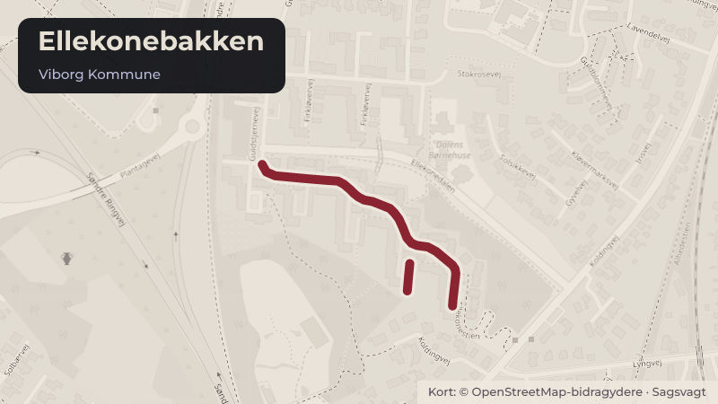

Besluttet 3. september, Fritidsrådet, Viborg
Kvartershuset Midtpunktet, Ellekonebakken (orienteringssag)
Orientering til Fritidsrådet om Kvartershuset Midtpunktet i Ellekonebakken, Viborg. Dels om baggrunden for projektet, dels en status på, hvor langt projektet er.
Steder i sagen: Ellekonebakken

Kort fortalt
- Forslaget
- Orienteringen tages til efterretning.
- Hvem
- Fritidsrådet, Viborg Kommune
- Hvornår
- Torsdag 3. september 2026
- Status
- Besluttet. Fritidsrådet besluttede 1. at tage orienteringen til efterretning. Melissa Amanda Boran John Tinghøj.
Læs hele sagen Kommunens egen tekst
Indstilling
Direktøren for Kultur & Udvikling indstiller,
1. at orienteringen tages til efterretning.
Sagsfremstilling
Historik
Boligselskabet Sct. Jørgen har som led i helhedsplanen for omdannelse af boligområdet
Ellekonebakken har taget initiativ til etablering af et kvarterhus ”Midtpunktet” for Viborg Søndre
bydel.
Boligselskabet Sct. Jørgen bemærker i den sammenhæng, at Viborg Kommunes beslutning
om at samle aftenskolernes virke i Viborg by på en samlet lokation, har vist sig yderst
hensigtsmæssig at indarbejde i Kvarterhus projektet, og det kan udvides til at indarbejde andre
fremskudte kommunale funktioner indenfor job og beskæftigelse og boligsociale indsatser.
Viborg Kommune har til realisering af helhedsplanen for Ellekonebakken igangsat en ændring
af infrastrukturen i området, således at området åbnes op, og det planlagte kvarterhus får
direkte adgang til Indre Ringvej, ligesom der er tiltag i gang i forhold til en ny lokalplan for
området.
Inddragelse og høring
Intet.
Beskrivelse
Etableringen af Midtpunktet har været længe undervejs. En del af bygningen skal
hovedsageligt være hjemsted for den folkeoplysende voksenundervisning i Viborg by samt
faciliteter for beboerne i Ellekonebakke-området, som drives af Boligselskabet Sct. Jørgen.
Byrådet har tilkendegivet, at man bakker om op projektet. Bl.a. ved at målrette
lokaletilskudsmidlerne til voksenundervisning i Viborg til dette sted.
På mødet gives en orientering af projektets baggrund og den aktuelle status for projektet.
Medlemmerne af Fritidsrådet Lone Husted og Hans Erik Lund vil orientere. Lone Husted er
skoleleder for LOF Midtjylland, som vil være kommende stor bruger af stedet. Hans Erik Lund
er Seniorrådgiver i Boligselskabet Sct. Jørgen.
Alternativer
Intet.
Tidsperspektiv
Intet.
Økonomiske forhold og konsekvenser
Intet.
Juridiske og planmæssige forhold
Intet.
Beslutning
Fritidsrådet besluttede
1. at tage orienteringen til efterretning.
Fraværende:
Melissa Amanda Boran
John Tinghøj
Kilde: Viborg Kommune, Fritidsrådet, referat fra mødet torsdag 3. september 2026, punkt 2. Læs den originale sag hos kommunen.